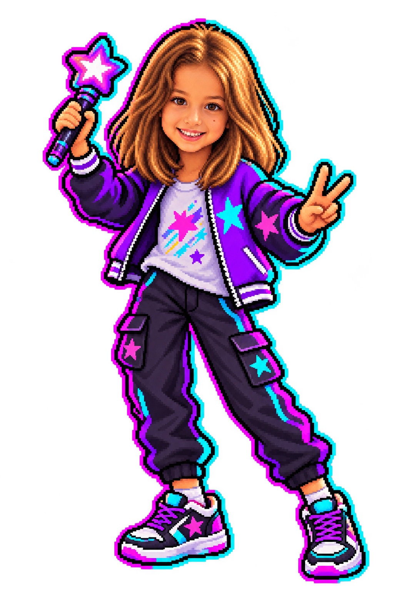
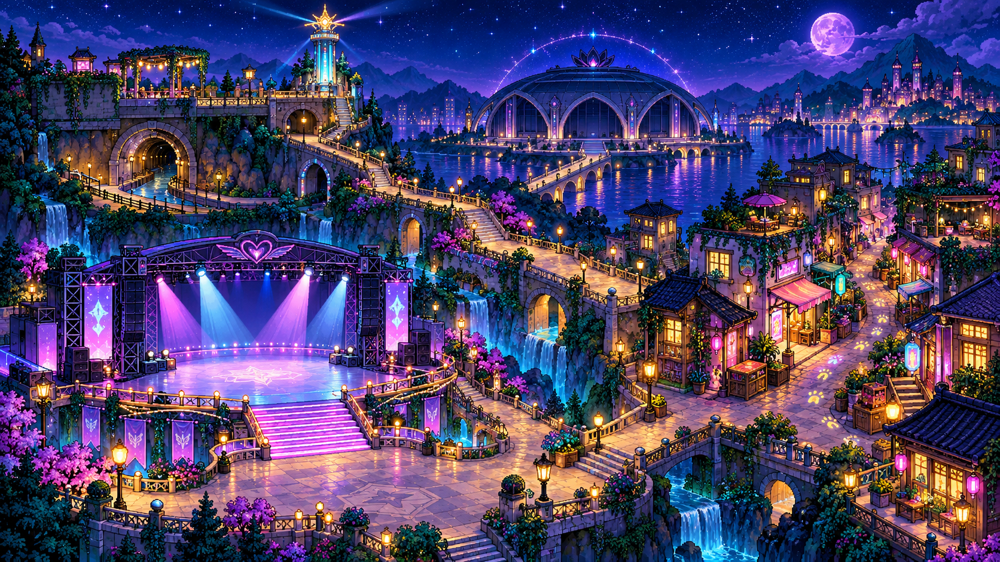
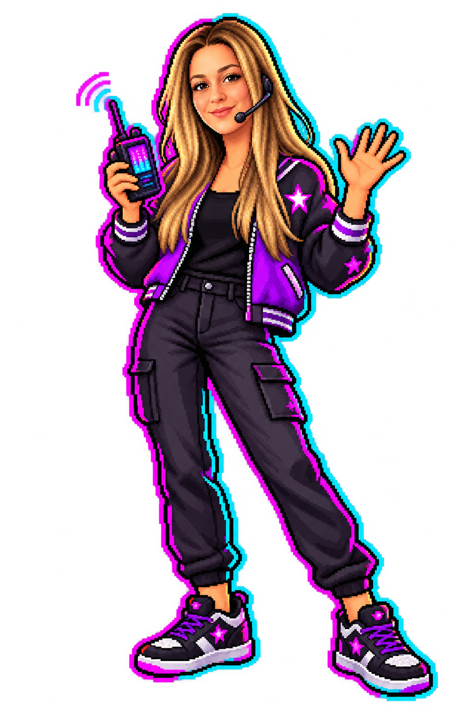
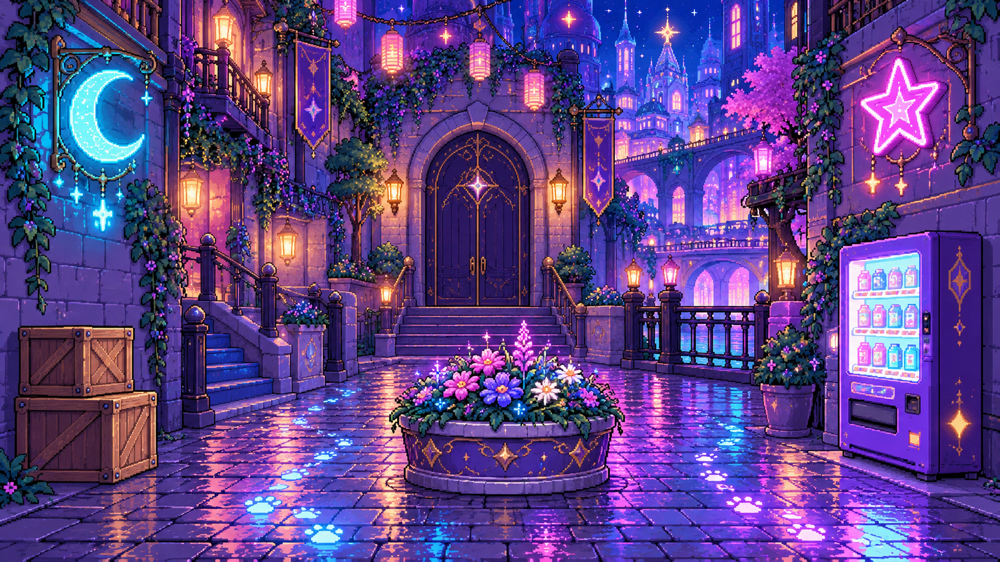
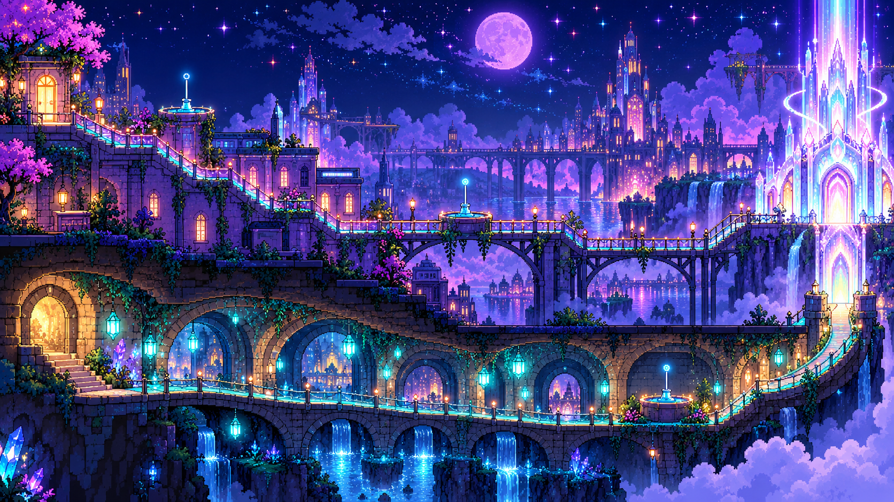
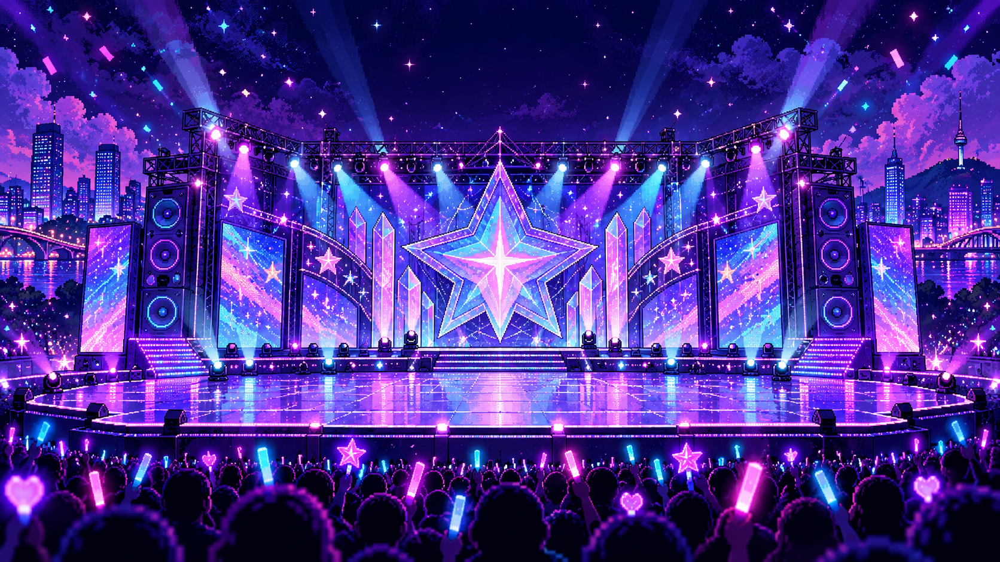

TRANSMISIÓN DESDE ALEMANIA
LARA.
LA CIUDAD
TE ESPERA.
«¡Lara, necesitamos tu ayuda! Soy Anne de Alemania y te hablo por radio. Un pequeño demonio ha cambiado las luces del concierto y ha escondido un cristal de luz. Anne te espera en la ciudad. ¿Vienes a buscarlo con nosotras?»
Una aventura de luces, música y amistad.
TU PRIMER PODER
Elige tu luz.
Este será tu color en la ciudad. Busca siempre tu estrella ★.
LA CIUDAD DE LAS LUCES
Elige tu misión.

Conecta las radios
Enciende las tres luces
Encuentra el cristal
LIVE

ANNE DE ALEMANIA · RADIO
«¡Te recibo, Lara! Pulsa el escenario iluminado. Anne te está esperando.»
MISIÓN 01 · EL ESCENARIO A OSCURAS
¡Enciende nuestras luces!
PASO 1
Toca a Lara.
Busca su estrella ★ en el escenario.
El foco está apagado. ¡Vamos a encenderlo!
¡LAS TRES LUCES ENCENDIDAS!
¡Ahora vemos su rastro!
«¡Lara, mira! Las huellas brillantes van hacia la calle de las sombras.»
MISIÓN 02 · CALLE DE LAS SOMBRAS
¿Dónde se esconde?

ANNE DE ALEMANIA · RADIO
Busca las orejitas que asoman.
¡PRIMER CRISTAL RECUPERADO!
«¡Vale, vale! ¡Era una broma!»
El pequeño demonio devuelve el cristal y señala la torre de luz.
«¡Lara! Soy Anne. Te espero junto a los dos caminos.»
MISIÓN 03 · LOS DOS CAMINOS
¡Seguimos conectadas!

Dos caminos.
«Lara, tú vas por los tejados y yo por el túnel. Podemos hablar por radio.»
Toca la primera antena.
«Soy Anne de Alemania. ¡Voy a ayudaros a conectar!»
¡LAS RADIOS FUNCIONAN!
Distintos caminos.
La misma conexión.
«¡Te escucho, Lara! Aunque estemos en lugares distintos, seguimos conectadas.»
«Y yo os escucho desde Alemania. ¡Me encanta ser tu amiga, Lara!»
Las luces de la torre se encienden. ¡Segundo cristal recuperado!
MISIÓN FINAL · EL GRAN CONCIERTO
¡Tu turno, estrella!

¡Ensayamos juntas!
«Ya tenemos los cristales. ¡Falta nuestro baile para encender el concierto! ¿Nos ayudas, Lara?»
Primero mira el baile. Puedes verlo todas las veces que quieras.
¡EL CONCIERTO BRILLA!
Lara, el tesoro eres tú.
Eres importante por ser tú. No tienes que ganar ningún juego para que te queramos.
ANNE
«Te quiero siempre: cuando te ríes, cuando lloras y cuando te enfadas.»
ANNE DE ALEMANIA
«Te quiero muchísimo. Aunque esté lejos, me encanta ser tu amiga.»
Hay una sorpresa para ti. Pregunta a Anne dónde te espera tu regalo. ♡